3.4 백분위수에 의한 부트스트랩 신뢰구간
항상 대칭이고 종 모양인 부트스트랩 분포를 가지고 \(95\%\) 신뢰구간만 원한다면 ’\(\text{표본 통계량} \pm 2 \times SE\)’를 계산하는 것으로 충분하다. \(95\%\)가 아닌 예를 들어 \(90\%\) 또는 \(99\%\) 신뢰구간은 어떻게 구할까?
신뢰구간을 구할 때 표준오차를 반드시 이용해야만 하는 것은 아니다. 부트스트랩의 백분위수를 사용할 수도 있다. 부트스트랩 분포는 부트스트랩 통계량들의 분포이다. 가장 작은 부트스트랩 통계량 \(2.5\%\)와 가장 큰 부트스트랩 통계량 \(2.5\%\)를 잘라내 버리고 중앙의 \(95\%\)를 포함하는 구간으로 신뢰구간을 만들 수 있다.
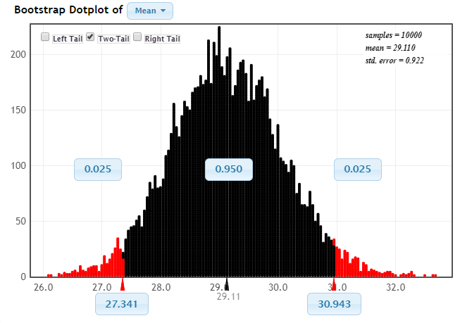
예제 3.23. 위 그림은 아틀란타 도시에서 표본으로 뽑은 근로자 \(500\)명의 통근 시간의 표본 평균에 대한 부트스트랩 분포이다. 부트스트랩 통계량은 가운데 \(95\%\), 양쪽에 \(2.5\%\) 분포한다. 백분위수를 이용하여 평균 통근 시간에 대한 \(95\%\) 신뢰구간을 구하라. 또 표준오차를 사용하는 \(95\%\) 법칙으로 구한 신뢰구간과 비교하라.
풀이 (클릭하면 풀이가 보입니다)
부트스트랩 분포에서 왼쪽 \(2.5\%\)는 \(27.34\)분, 오른쪽 \(2.5\%\)는 \(30.94\)분이다. 아틀란타 평균 통근 시간의 \(95\%\) 신뢰구간은 \(27.34\)분에서 \(30.94\)분이다.
위 부트스트랩 분포에서 표준오차의 추정치는 \(0.922\)이다. 표준오차를 이용한 \(95\%\) 신뢰구간은 \(29.11 \pm 2 \times 0.92 = 29.11 \pm 1.84 = (27.27, 30.95)\) 인데 백분위수로 구한 것과 비슷하다.
부트스트랩 분포가 대칭이고 종 모양일 때 표준오차를 이용한 \(95\%\) 신뢰구간과 백분위수를 이용한 \(95\%\) 신뢰구간은 거의 같다.
StatKey App 이용하기
- 웹 페이지(http://www.lock5stat.com/StatKey/index.html)를 방문한다.
- “Bootstrap Confidence Intervals” 아래 “CI for Single Mean, Median, St.Dev.” 클릭한다.
- 왼쪽 상단에서 데이터 “Mustang Price (Price)” 대신에 “Atlanta Commute (Time)” 선택한다.
- “Generate \(1000\) sample” 버튼을 \(10\)번 클릭하여 부트스트랩 표본을 \(10{,}000\)개 뽑는다.
- 부트스트랩 분포 그래프의 왼쪽 상단의 “Two-Tail” 체크한다.
- 왼쪽에서 \(2.5\%\)인 부트스트랩 통계량 값은 \(27.3\)분, 오른쪽에서 \(2.5\%\)는 \(30.9\)분이다.
- 백분위수를 이용한 \(95\%\) 부트스트랩 신뢰구간은 \(27.3\)분에서 \(30.9\)분이다.
확인문제 1. \(95\%\) 신뢰구간을 구할 때 표준오차 대신 사용하는 방법은 무엇인가? (선택지를 눌러 채점)
1 표본 평균을 계산한다.
2 백분위수를 사용하여 신뢰구간을 계산한다.
3 신뢰수준을 \(90\%\)로 설정한다.
4 표본의 표준편차를 계산한다.
확인문제 2. 백분위수를 이용하여 \(95\%\) 신뢰구간을 구할 때, 신뢰구간을 계산하기 위해 잘라내는 비율은 어느 정도인가? (선택지를 눌러 채점)
1 양쪽 \(5\%\)
2 양쪽 \(2.5\%\)
3 양쪽 \(1\%\)
4 양쪽 \(10\%\)
확인문제 3. 부트스트랩 분포가 대칭이고 종 모양일 때, 표준오차를 사용하여 구한 \(95\%\) 신뢰구간과 백분위수를 사용하여 구한 신뢰구간의 결과는 어떻게 되는가? (선택지를 눌러 채점)
1 항상 다르다.
2 거의 같다.
3 백분위수를 사용한 신뢰구간이 항상 더 좁다.
4 표준오차를 사용한 신뢰구간이 항상 더 넓다.
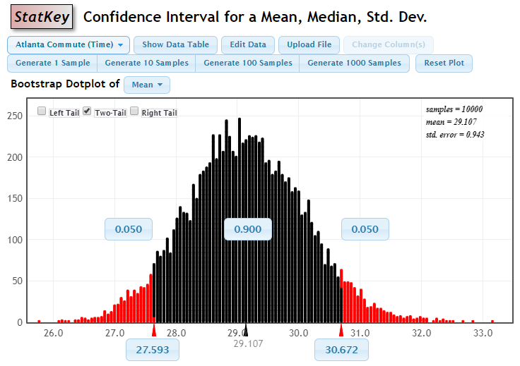
예제 3.24. StatKey 앱을 이용하여 아틀란타의 평균 통근 시간의 \(90\%\), \(99\%\) 신뢰구간을 구하라.
풀이 (클릭하면 풀이가 보입니다)
- 웹 페이지(http://www.lock5stat.com/StatKey/bootstrap_1_quant/bootstrap_1_quant.html)를 방문한다.
- 데이터 “Atlanta Commute (Time)”를 선택한다.
- 부트스트랩 표본을 \(10{,}000\)개 추출한다.
- 체크 버튼에서 “Two-Tail” 선택한다.
- \(90\%\) 신뢰구간을 구하려면 “\(0.025\)”를 클릭하여 “\(0.05\)”로 변경한다.
- \(99\%\) 신뢰구간을 구하려면 “\(0.05\)”를 클릭하여 “\(0.005\)”로 변경한다.
위 부트스트랩 분포 그래프에서 \(90\%\) 신뢰구간은 (\(27.59\), \(30.67\)) 이다.
아래 부트스트랩 분포 그래프에서 \(99\%\) 신뢰구간은 (\(26.82\), \(31.70\)) 이다.
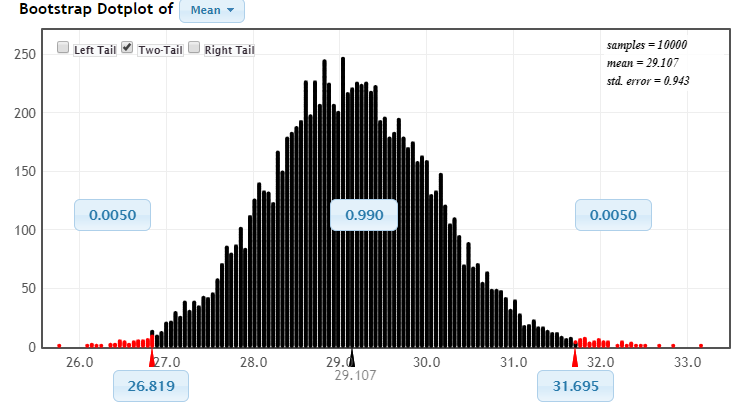
위 예제에서 모평균이 신뢰구간 안에 포함된다는 것을 좀 더 확신하려면 신뢰구간은 더 넓어진다. \(100\%\) 신뢰구간은 어떨까? 평균 통근 시간이 \(0\)에서 \(200\)분 사이라면 \(100\%\) 확신할 수 있다. 하지만 이런 신뢰구간은 쓸모가 없다. 표본 없이도 \(100\%\) 신뢰구간을 만들려면 신뢰구간을 넓히기만 하면 된다.
신뢰구간의 너비와 신뢰수준 사이에 균형을 취해야 한다. 신뢰구간이 좁으면 신뢰수준이 낮아지고 신뢰구간이 넓으면 신뢰수준이 높아진다. 많이 사용하는 신뢰수준은 \(90\%\), \(95\%\), \(99\%\)이다.
확인문제 1. \(90\%\) 신뢰구간을 구하기 위해 StatKey 앱에서 어떤 값을 변경해야 하는가? (선택지를 눌러 채점)
1 “\(0.05\)”를 “\(0.025\)”로 변경한다.
2 “\(0.025\)”를 “\(0.05\)”로 변경한다.
3 “\(0.01\)”을 “\(0.02\)”로 변경한다.
4 “\(0.005\)”를 “\(0.025\)”로 변경한다.
확인문제 2. \(99\%\) 신뢰구간을 구할 때 StatKey 앱에서 어떤 값을 변경해야 하는가? (선택지를 눌러 채점)
1 “\(0.05\)”를 “\(0.005\)”로 변경한다.
2 “\(0.025\)”를 “\(0.05\)”로 변경한다.
3 “\(0.05\)”를 “\(0.1\)”로 변경한다.
4 “\(0.005\)”를 “\(0.025\)”로 변경한다.
확인문제 3. \(100\%\) 신뢰구간을 만들기 위해서는 무엇을 해야 하는가? (선택지를 눌러 채점)
1 신뢰수준을 낮춘다.
2 신뢰구간을 넓힌다.
3 표본 크기를 늘린다.
4 신뢰구간을 좁힌다.
모수가 다른 경우의 신뢰구간
부트스트랩 신뢰구간을 구하는 과정은 매우 유연하므로 여러 종류의 모수에 대한 신뢰구간을 구할 때도 사용한다. 부트스트랩 분포만 구할 수 있으면 신뢰구간은 쉽게 얻어진다. 주의를 기울여야 할 점은 부트스트랩 표본 추출 과정과 부트스트랩 통계량 계산을 오리지널 표본처럼 하는 것이다. 다음 두 예제에서 알아보자.
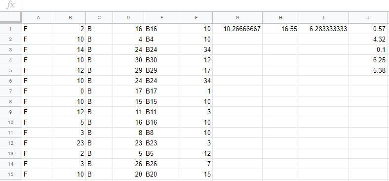
예제 3.25. \(50\)명의 학생에게 일주일에 얼마나 운동하는지 물었다. 결과는 ExerciseHours에서 얻을 수 있다.
(1) 구글 시트로 남녀별 운동 시간(Exercise)의 평균과 표준편차를 각각 계산하라. 남자와 여자의 평균 운동 시간 차이에 대한 최적 추정치는 무엇인가?
(2) 구글 시트로 부트스트랩 통계량 \(5\)개를 구하라.
(3) StatKey 앱을 이용하여 남녀의 평균 운동 시간의 차이에 대한 \(95\%\) 신뢰구간을 구하라.
풀이 (클릭하면 풀이가 보입니다)
(1)
남자:
- 표본 크기 \(n_M = 20\)
- 표본 평균 \(\bar{x}_M = 12.4\)
- 표본 표준편차 \(s_M = 8.8\)
여자:
- 표본 크기 \(n_F = 30\)
- 표본 평균 \(\bar{x}_F = 9.4\)
- 표본 표준편차 \(s_F = 7.41\)
남자와 여자의 평균 운동 시간 차이에 대한 최적 추정치 \(\bar{x}_M - \bar{x}_F = 12.4 - 9.4 = 3\)이다.
(2)
- 시트를 열고 importdata() 함수를 이용하여 데이터를 다운받는다.
- 시트\(2\)를 만들고 시트\(1\)의 ’
B2:B51데이터를 시트\(2\)의 셀A1에 복사한다. - 시트\(1\)의 ’
D2:D51데이터를 시트\(2\)의 셀B1에 복사한다. - 시트\(2\)의 데이터를 A열 기준 ’A->Z’로 정렬한다.
- 셀
C1에 ‘B’ 입력한 후에 오른쪽 하단 사각형을 더블 클릭하여 셀C50까지 복사한다. - 셀
D1에=randbetween(1, 30)입력하고 셀D30까지 복사한다. - 셀
D31에=randbetween(31, 50)입력하고 셀D50까지 복사한다. - 셀
E1에=concatenate(C1, D1)입력하고 셀E50까지 복사한다. - 셀
F1에=indirect(E1)입력하고 셀F50까지 복사한다. - 셀
G1에=average(F1:F30)입력하여 여자인 경우 부트스트랩 표본의 평균을 계산한다. - 셀
H1에=average(F31:F50)입력하여 남자인 경우 부트스트랩 표본의 평균을 계산한다. - 셀
I1에=H1-G1입력하여 부트스트랩 표본의 남녀 평균 운동 시간 차이를 계산한다. - 셀
J1에 셀I1의 값을 입력한다. 이 값이 부트스트랩 통계량 값이다. - 값 입력 후 엔터 키를 치면 셀
I1의 값이 바뀐다. 바뀐 값을 셀J2에 입력한다.
\(5\)번 반복한 결과가 위 그림이다.
(3)
- 웹 페이지(http://www.lock5stat.com/StatKey/index.html)를 방문한다.
- 가운데 “Bootstrap Confidence Intervals” 항목 아래의 “CI for Difference In Means”를 클릭한다.
- 데이터는 “Exercise Hours (Male - Female)”임을 확인한다.
- 부트스트랩 표본을 \(10{,}000\)개 추출한다.
- “Two-Tail” 버튼을 클릭한 결과가 아래에 있다.
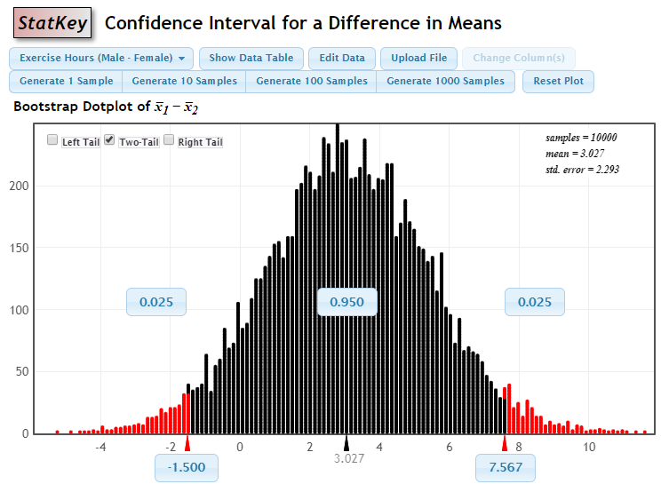
백분위수를 이용한 남녀의 평균 운동 시간의 차이에 대한 \(95\%\) 신뢰구간은 (\(-1.50\), \(7.57\)) 이다. 표준오차를 이용한 남녀의 평균 운동 시간의 차이에 대한 \(95\%\) 신뢰구간은 다음과 같다.
\[\bar{x}_M - \bar{x}_F \pm 2 \times SE = 3.0 \pm 2 \times 2.293 = 3.0 \pm 4.59 = (-1.59, 7.59)\]
두 개의 신뢰구간이 정확히 같지는 않지만 실질적인 차이는 없다. 신뢰구간 안에 \(0\)이 포함되므로 \(0\)도 \(\mu_M - \mu_F\)의 그럴듯한 값이다. 이는 남녀간의 평균 운동 시간에 차이가 없음을 의미한다.
확인문제 1. 남녀의 평균 운동 시간 차이에 대한 최적 추정치는 무엇인가? (선택지를 눌러 채점)
1 \(7.41\)
2 \(12.4\)
3 \(3\)
4 \(9.4\)
확인문제 2. 부트스트랩 통계량을 계산하기 위해 사용한 방법은 무엇인가? (선택지를 눌러 채점)
1 표본에서 \(100\)개 데이터를 무작위로 뽑고 평균을 계산한다.
2 표본에서 복원 추출하여 부트스트랩 표본을 만들고 평균 차이를 계산한다.
3 모집단에서 \(50\)개를 무작위로 뽑아 평균을 계산한다.
4 표본에서 단순히 평균을 계산한다.
확인문제 3. 남녀의 평균 운동 시간 차이에 대한 \(95\%\) 신뢰구간을 구한 결과, 신뢰구간이 (\(-1.50\), \(7.57\))로 나왔다. 이 구간에서 무엇을 알 수 있는가? (선택지를 눌러 채점)
1 남녀의 평균 운동 시간에 큰 차이가 있음.
2 신뢰구간에 \(0\)이 포함되므로 남녀의 평균 운동 시간 차이가 없을 수 있음.
3 남녀의 평균 운동 시간이 동일하다는 확신이 있음.
4 신뢰구간에 \(0\)이 포함되지 않으므로 차이가 확실히 존재함.
예제 3.26. 중고 자동차 가격(단위: \(\$1{,}000\)) 운행 거리(단위: \(1{,}000\)마일) 늘어날수록 값이 내려간다. 인터넷에서 한 차종의 운행 거리와 가격을 조사한 자료는 MustangPrice에서 얻을 수 있다. 두 변수의 산점도 그래프가 아래에 있다.
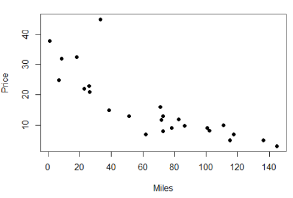
(1) 상관관계를 계산하라.
(2) 구글 스프레드 시트에서 부트스트랩 표본을 뽑아 상관관계에 대한 부트스트랩 통계량을 \(5\)개 계산하라.
(3) StatKey 앱을 사용하여 상관관계에 대한 \(98\%\) 신뢰구간을 구하라.
풀이 (클릭하면 풀이가 보입니다)
(1) 상관관계 = \(-0.825\)
(2) 아래 그림을 참조한다.
- 데이터를 시트\(1\)에 다운받는다.
- B와 C열의 데이터 시트\(2\)에 복사한다.
- 셀
C2:C26에 A,D2:D26에 B를 입력한다. - 셀
E2에=randbetween(2, 26)입력하고 셀E26까지 복사한다. - 셀
F2에=concat(C2, E2)입력하고 셀F26까지 복사한다. - 셀
G2에=concat(D2, E2)입력하고 셀G26까지 복사한다. - 셀
H2에=indirect(F2)입력하고 셀H26까지 복사한다. - 셀
I2에=indirect(G2)입력하고 셀I26까지 복사한다. - 셀
J2에=correl(H2:H26, I2:I26)입력한다. - 셀
K2에 셀J2의 부트스트랩 상관관계 값을 입력한다. - 부트스트랩 표본의 상관관계를 \(4\)개 더 구한다.
(3)
- StatKey 웹 사이트(http://www.lock5stat.com/StatKey/index.html)를 방문한다.
- 메뉴 중에서 ‘Bootstrap Confidence Intervals => Ci for Slope, Correlation’ 선택한다.
- 데이터 중에서 ’Mustang Price’를 선택한다.
- 부트스트랩 표본을 \(10{,}000\)개 추출한다.
- Two-Tail 버튼을 체크한다.
- 부트스트랩 분포에서 \(0.025\)를 \(0.01\)로 변경한다.
맨 아래 그림에서 상관관계의 \(98\%\) 신뢰구간은 (\(-0.939\), \(-0.706\))이다.
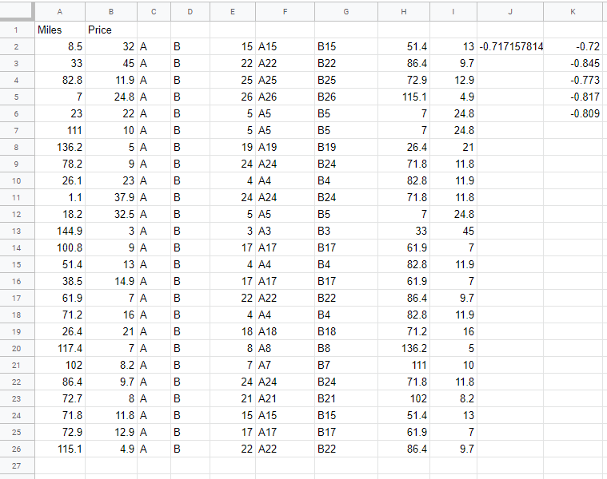
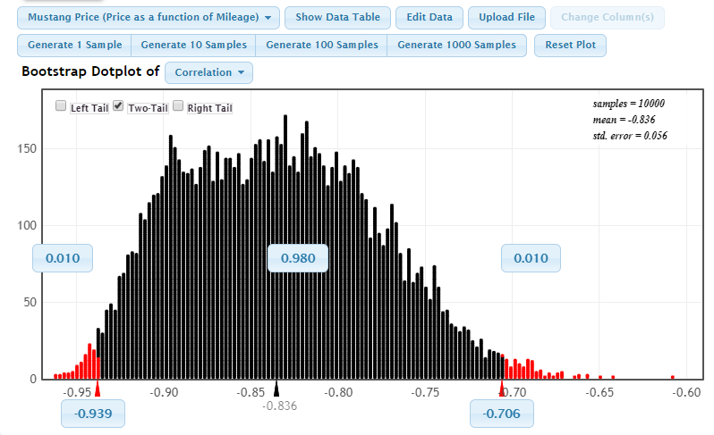
확인문제 1. 두 변수의 상관관계는 무엇인가? (선택지를 눌러 채점)
1 \(-0.939\)
2 \(-0.825\)
3 \(0.706\)
4 \(0.939\)
확인문제 2. 구글 스프레드시트에서 부트스트랩 표본을 뽑아 상관관계에 대한 부트스트랩 통계량을 \(5\)개 계산하는 방법으로 적절한 것은 무엇인가? (선택지를 눌러 채점)
1 셀 E2에 =randbetween(1, 26)을 입력하고, 셀 F2에 =indirect(E2)를 입력하여 부트스트랩 표본을 생성한다.
2 셀 E2에 =randbetween(2, 26)을 입력하고, 셀 F2에 =concat(C2, E2)를 입력하여 부트스트랩 표본을 생성한다.
3 셀 E2에 =random(1, 26)을 입력하고, 셀 F2에 =indirect(E2)를 입력하여 부트스트랩 표본을 생성한다.
4 셀 E2에 =randbetween(1, 26)을 입력하고, 셀 F2에 =correl(E2:E26)을 입력하여 부트스트랩 표본을 생성한다.
확인문제 3. StatKey 앱을 사용하여 상관관계에 대한 \(98\%\) 신뢰구간을 구한 결과, 신뢰구간은 (\(-0.939\), \(-0.706\))이다. 이 신뢰구간에 대한 해석은 무엇인가? (선택지를 눌러 채점)
1 신뢰구간에 \(0\)이 포함되므로 두 변수 간에는 상관관계가 없다.
2 신뢰구간이 음수로 나타나므로 두 변수는 부(-)의 상관관계를 가진다.
3 신뢰구간이 \(0\)을 포함하지 않으므로 두 변수는 강한 양의 상관관계를 가진다.
4 신뢰구간이 \(0\)을 포함하지 않으므로 두 변수는 강한 음의 상관관계를 가진다.
예제 3.22에서 혼합 너트 중 땅콩의 비율을 구할 때 표본의 크기는 \(100\)이었다. 표본의 크기는 더 크지만 표본 비율은 같을 때 결과는 어떻게 달라지는지 다음 예제에서 알아보자.
예제 3.27. 혼합된 너트 \(400\)개 중에서 땅콩은 \(208\)개이다. 표본 비율 \(\hat{p} = 0.52\)이다. 땅콩 비율에 대한 \(95\%\) 신뢰구간을 구하라. 결과를 예제 3.22에서 표본 크기가 \(100\)일 때 땅콩 비율에 대한 \(95\%\) 신뢰구간 (\(0.42\), \(0.62\))와 비교하라.
풀이 (클릭하면 풀이가 보입니다)
- StatKey 웹 사이트(http://www.lock5stat.com/StatKey/index.html)를 방문한다.
- 메뉴 중에서 ‘Bootstrap Confidence Intervals => Ci for Single Proportion’ 선택한다.
- ‘Edit Data’ 버튼을 클릭한다.
- count는 \(208\), sample size는 \(400\)을 입력한 후 ok 버튼을 클릭한다.
- 부트스트랩 표본을 \(10{,}000\)개 뽑는다.
- Two-Tail 버튼을 클릭하여 \(95\%\) 신뢰구간을 구한다.
아래 그림에서 땅콩 비율의 \(95\%\) 신뢰구간은 (\(0.470\), \(0.569\)) 이다. 이 신뢰구간의 너비는 표본 크기가 \(100\)일 때 신뢰구간의 너비보다 훨씬 좁다. 사실 너비는 \(1\)/\(2\)로 줄었다. 오차한계는 \(0.10\)에서 \(0.05\)로 \(1\)/\(2\) 줄었다. 표본 크기가 커지면 표준오차가 작아지고 오차한계도 따라서 작아진다. 오차한계가 작아지면 신뢰구간의 폭도 줄어든다.
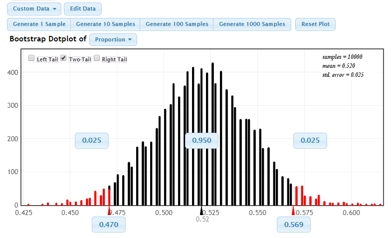
확인문제 1. 혼합된 너트 \(400\)개 중에서 땅콩의 비율을 구할 때, 표본의 크기가 \(100\)일 때와 \(400\)일 때 신뢰구간의 너비가 어떻게 달라질까요? (선택지를 눌러 채점)
1 표본 크기가 \(100\)일 때와 \(400\)일 때 신뢰구간의 너비는 같다.
2 표본 크기가 \(100\)일 때 신뢰구간의 너비는 \(2\)배 크고, \(400\)일 때는 \(1\)/\(2\)로 줄어든다.
3 표본 크기가 \(100\)일 때 신뢰구간의 너비는 \(1\)/\(2\)로 줄고, \(400\)일 때는 \(2\)배 커진다.
4 표본 크기가 \(100\)일 때 신뢰구간의 너비는 \(4\)배 커지고, \(400\)일 때는 \(1\)/\(4\)로 줄어든다.
확인문제 2. 다음 중 예제 3.27에서 신뢰구간을 구할 때 표본 크기가 증가함에 따라 무엇이 변할까요? (선택지를 눌러 채점)
1 표본의 평균은 변하지 않지만, 신뢰구간의 폭이 커진다.
2 표본 크기가 커지면 표준오차가 작아지고, 그에 따라 신뢰구간의 폭이 작아진다.
3 표본 크기가 커지면 표준오차가 커지고, 그에 따라 신뢰구간의 폭이 커진다.
4 표본 크기와 신뢰구간의 폭은 관계가 없으며, 표본 비율에만 영향을 미친다.
확인문제 3. 예제 3.27에서 \(95\%\) 신뢰구간은 (\(0.470\), \(0.569\))이다. 이 신뢰구간에 대해 정확한 해석은 무엇인가? (선택지를 눌러 채점)
1 신뢰구간에 \(0.52\)가 포함되므로, 실제 비율은 \(0.52\)로 확정된다.
2 신뢰구간의 범위는 실제 비율이 포함될 수 있는 구간을 나타내며, 실제 비율은 이 구간 내에 있을 확률이 \(95\%\)이다.
3 신뢰구간의 범위는 실제 비율이 정확히 포함될 수 있음을 의미한다.
4 신뢰구간이 좁기 때문에 실제 비율이 \(0.52\)일 확률이 \(95\%\)이다.
부트스트랩 신뢰구간을 만들 때 주의할 점
부트스트랩 신뢰구간을 항상 성공적으로 구할 수는 없다. 다음 예제를 보자.
예제 3.28. Statkey 앱에서 Mustang 데이터의 가격(price) 중앙값에 대한 부트스트랩 분포를 만든다. 부트스트랩 분포를 이용한 중앙값에 대한 \(95\%\) 신뢰구간이 잘 작동하지 않는 이유를 설명하라.
풀이 (클릭하면 풀이가 보입니다)
- StatKey 웹 사이트(http://www.lock5stat.com/StatKey/index.html)를 방문한다.
- 메뉴 중에서 ‘Bootstrap Confidence Intervals => Ci for Single Mean, Median, St. Dev.’ 선택한다.
- 데이터가 ’Mustang Price’인지 확인한다.
- Bootstrap Dotplot 오른쪽 버튼의 Mean을 Median으로 바꾼다.
- 부트스트랩 표본을 \(10{,}000\)개 뽑는다.
- Two-Tail 버튼을 클릭하여 \(95\%\) 신뢰구간을 구한다.
결과는 아래 그림이다. 부트스트랩 분포에서 신뢰구간 (\(9\), \(21\))은 쉽게 구할 수 있다. 하지만 부트스트랩 분포의 모양이 대칭이고 종 모양에 가까운가? 우리가 지금까지 보아온 부트스트랩 분포의 모양과는 매우 다르다.
\(25\)개의 데이터에서 중앙값은 반드시 이들 \(25\)개 값 중에서 하나다. 부트스트랩 중앙값은 오리지널 \(25\)개 값으로 제한된다. 예를 들면 부트스트랩 분포에서 백분위수가 \(16\)과 \(21\) 사이에 존재할 수 없다. 부트스트랩 분포의 백분위수 또는 “\(\pm 2 \times SE\)” 법칙을 사용할 때는 부트스트랩 분포가 오리지널 통계량을 중심으로 대칭이고 종 모양에 가까운지를 반드시 확인해야 한다. 이 조건이 만족되지 않으면 신뢰구간을 만드는데 부트스트랩 분포를 사용하지 말아야 한다. 다행히 대부분의 통계량에 대하여 부트스트랩 분포는 잘 작동한다.
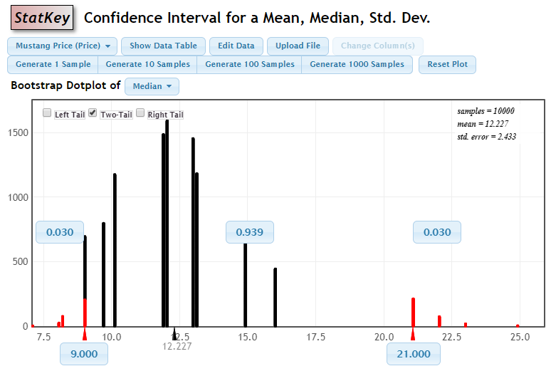
확인문제 1. 부트스트랩 신뢰구간을 만들 때 주의해야 할 점으로 올바른 설명은 무엇인가? (선택지를 눌러 채점)
1 부트스트랩 분포가 대칭이고 종 모양에 가까워야 신뢰구간을 구할 수 있다.
2 부트스트랩 표본 수가 적으면 신뢰구간이 정확하게 계산되지 않는다.
3 부트스트랩 분포의 중심이 오리지널 표본 통계량과 차이가 나면 신뢰구간을 구할 수 없다.
4 부트스트랩 신뢰구간을 계산할 때, 반드시 백분위수 방법만 사용해야 한다.
확인문제 2. 예제 3.28에서 Mustang 데이터의 가격에 대한 중앙값에 대한 부트스트랩 분포가 잘 작동하지 않는 이유는 무엇인가? (선택지를 눌러 채점)
1 중앙값은 반드시 오리지널 데이터 값 중 하나로 제한되므로 부트스트랩 분포가 대칭이고 종 모양에 가까운 형태를 보이지 않게 된다.
2 부트스트랩 표본 수가 적어 부트스트랩 분포의 정확한 모양을 예측하기 어렵다.
3 중앙값의 경우, 표본이 매우 클 때만 부트스트랩 신뢰구간이 정확히 작동한다.
4 중앙값에 대한 부트스트랩 신뢰구간은 항상 작동하지 않으며, 반드시 다른 방법을 사용해야 한다.
확인문제 3. 부트스트랩 신뢰구간을 계산할 때, 부트스트랩 분포가 대칭이고 종 모양에 가까워야만 하는 이유는 무엇인가? (선택지를 눌러 채점)
1 대칭적이고 종 모양인 분포에서 신뢰구간은 표본의 정확도를 더 잘 반영하기 때문이다.
2 대칭적이고 종 모양인 분포는 표본의 크기가 작을 때도 신뢰구간을 잘 계산할 수 있기 때문이다.
3 부트스트랩 분포의 모양이 대칭이고 종 모양이 아니면, 신뢰구간의 정확도가 떨어지기 때문이다.
4 부트스트랩 분포의 모양이 대칭이고 종 모양이 아니면, 계산이 더 쉬워지기 때문이다.
학습 내용 정리
다음 사항을 이해하거나 해결하는 능력이 있어야 한다.
- 부트스트랩 분포의 백분위수를 이용하여 신뢰구간을 구한다.
- 여러 종류의 모수에 대하여 부트스트랩 통계량을 만들 수 있다.
- 신뢰구간의 너비는 신뢰수준과 표본 크기의 영향을 받는다.
- 백분위수 또는 표준오차를 이용한 부트스트랩 신뢰구간은 언제 가능한지 안다.
백분위수를 이용한 부트스트랩 신뢰구간
부트스트랩 분포가 대략 대칭인 경우, 부트스트랩 분포에서 백분위수 \(2\)개 사이에서 부트스트랩 통계량의 비율이 원하는 신뢰수준과 일치하는 백분위수 구간이 부트스트랩 신뢰 구간이다.
표본 크기가 커지면 정확도가 증가한다.
표본 크기가 커지면 추정치의 정확도가 증가한다. 즉, 표본 크기가 커지면 표준오차가 작아지고 신뢰구간의 폭도 좁아진다.
확인문제 1. 부트스트랩 분포에서 백분위수를 이용하여 신뢰구간을 구할 때, 부트스트랩 분포가 대칭인 경우에 신뢰구간을 구하는 방법은 무엇인가? (선택지를 눌러 채점)
1 백분위수 \(2\)개 사이에서 부트스트랩 통계량의 비율이 원하는 신뢰수준과 일치하는 구간을 찾는다.
2 표본 통계량의 평균을 기준으로 두 표준오차의 범위 안에서 구간을 만든다.
3 부트스트랩 통계량의 최댓값과 최솟값 사이에서 구간을 만든다.
4 표본 크기가 커질수록, 구간이 더 넓어지므로 그에 맞는 조정을 한다.
확인문제 2. 표본 크기가 커지면 신뢰구간의 정확도와 폭은 어떻게 변하는가? (선택지를 눌러 채점)
1 표본 크기가 커지면 정확도는 증가하지만 신뢰구간의 폭은 넓어진다.
2 표본 크기가 커지면 정확도는 감소하고 신뢰구간의 폭은 좁아진다.
3 표본 크기가 커지면 정확도와 신뢰구간의 폭은 모두 증가한다.
4 표본 크기가 커지면 정확도는 증가하고 신뢰구간의 폭은 좁아진다.
확인문제 3. 백분위수 또는 표준오차를 이용한 부트스트랩 신뢰구간은 언제 사용할 수 있는가? (선택지를 눌러 채점)
1 표본 크기가 충분히 작을 때만 사용해야 한다.
2 부트스트랩 분포가 대칭이고 종 모양일 때만 사용할 수 있다.
3 표본 통계량이 비정상적인 분포를 가질 때만 사용할 수 있다.
4 표본 통계량이 정규 분포를 따를 때만 사용할 수 있다.
과제 3.11.
피트니스 평균 점수를 추정하려고 한다. 표본 크기 \(n = 30\)인 오리지널 표본과 \(5000\)개의 부트스트랩 표본에 기초한 부트스트랩 분포를 사용한 \(95\%\) 신뢰구간은 \((67, 73)\)이다. 다음 각 문항의 내용을 제외하면 상황은 위와 같다. 각 문항의 신뢰구간과 가장 가까운 것은 다음 중에서 고르시오.
(1) \(99\%\) 신뢰구간 — 신뢰구간과 가장 가까운 것은?
1 \((66, 74)\)
2 \((67, 73)\)
3 \((67.5, 72.5)\)
(2) \(90\%\) 신뢰구간 — 신뢰구간과 가장 가까운 것은?
1 \((66, 74)\)
2 \((67, 73)\)
3 \((67.5, 72.5)\)
(3) 표본 크기 \(n=45\) — 신뢰구간과 가장 가까운 것은?
1 \((66, 74)\)
2 \((67, 73)\)
3 \((67.5, 72.5)\)
(4) 표본 크기 \(n=16\) — 신뢰구간과 가장 가까운 것은?
1 \((66, 74)\)
2 \((67, 73)\)
3 \((67.5, 72.5)\)
(5) 부트스트랩 표본 수 \(10{,}000\)개 — 신뢰구간과 가장 가까운 것은?
1 \((66, 74)\)
2 \((67, 73)\)
3 \((67.5, 72.5)\)
(6) 부트스트랩 표본 수 \(1000\)개 — 신뢰구간과 가장 가까운 것은?
1 \((66, 74)\)
2 \((67, 73)\)
3 \((67.5, 72.5)\)
과제 3.12.
트리클로산은 비누, 로션, 치약과 같은 제품에 종종 첨가되는 화합물이다. 트리콜로산은 항균제여서 포도상구균 감염 가능성을 낮출 수 있을 것으로 기대된다. 하지만, 최근의 연구에서 반대되는 증거가 나왔다. 미생물학자 연구팀이 피험자 90명의 코에서, 트리콜로산과 트리콜로산이 포도상구균을 옮겼는지를 조사하였다. 데이터를 정리한 결과는 아래 표이다. 트리콜로산 유무에 따른 포도상구균의 검출 비율의 차이를 추정하려고 한다.
| 포도상구균 검출 | 포도상구균 미검출 | 합계 | |
| 트리콜로산 검출 | 24 | 13 | 37 |
| 트리콜로산 미검출 | 15 | 38 | 53 |
| 합계 | 39 | 51 | 90 |
(1) 모수에 대한 올바른 기호는?
1 \(\bar{x}_1-\bar{x}_2\)
2 \(\hat{p}_1-\hat{p}_2\)
3 \(p_1-p_2\)
4 \(p\)
5 \(\mu_1-\mu_2\)
(2) 추정치에 대한 올바른 기호는?
1 \(\bar{x}_1-\bar{x}_2\)
2 \(\hat{p}_1-\hat{p}_2\)
3 \(p_1-p_2\)
4 \(p\)
5 \(\mu_1-\mu_2\)
(3) 추정치 값은? (소수 3자리, 자유 기입)
정답: 0.366
(4)-a 99% 신뢰구간의 하한은? (StatKey)
1 \(0.021\)
2 \(0.096\)
3 \(0.163\)
4 \(0.201\)
5 \(0.525\)
6 \(0.557\)
7 \(0.611\)
8 \(0.679\)
(4)-b 99% 신뢰구간의 상한은?
1 \(0.021\)
2 \(0.096\)
3 \(0.163\)
4 \(0.201\)
5 \(0.525\)
6 \(0.557\)
7 \(0.611\)
8 \(0.679\)
(5) 트리클로산이 있으면 감염 가능성이 더 높아지는가?
1 높아진다
2 낮아진다
3 관계 없다
(6) 트리클로산 때문에 감염이 증가한다고 결론지을 수 있는가?
1 있다
2 없다
과제 3.13.
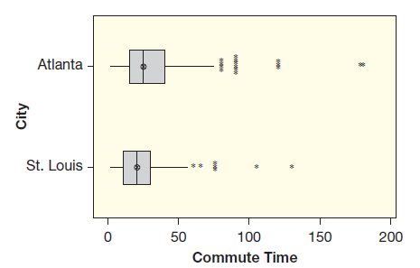
아틀란타 시의 근로자 500명의 통근 시간 데이터를 예제에서 다루었다. 세인트루이스 시에 거주하는 근로자 500명의 통근 시간 데이터는 commutestlouis에서 얻을 수 있다. 두 표본의 상자그림은 위에 있다. 아틀란타 시와 세인트루이스 시의 평균 통근 시간 차이를 추정하려고 한다.
(1) 어느 도시의 평균 통근 시간이 더 긴가?
1 아틀란타
2 세인트루이스
(2) 추정할 모수의 올바른 기호는?
1 \(\bar{x}_1-\bar{x}_2\)
2 \(\hat{p}_1-\hat{p}_2\)
3 \(p_1-p_2\)
4 \(p\)
5 \(\mu_1-\mu_2\)
(3) 추정치에 대한 올바른 기호는?
1 \(\bar{x}_1-\bar{x}_2\)
2 \(\hat{p}_1-\hat{p}_2\)
3 \(p_1-p_2\)
4 \(p\)
5 \(\mu_1-\mu_2\)
(4) 추정치 값은? (소수 2자리, 자유 기입)
정답: 7.14
(5)-a 두 도시 평균 통근 시간 차이의 95% 신뢰구간 하한은? (StatKey)
1 \(4.306\)
2 \(4.588\)
3 \(4.975\)
4 \(9.397\)
5 \(9.786\)
6 \(10.137\)
(5)-b 95% 신뢰구간의 상한은?
1 \(4.306\)
2 \(4.588\)
3 \(4.975\)
4 \(9.397\)
5 \(9.786\)
6 \(10.137\)